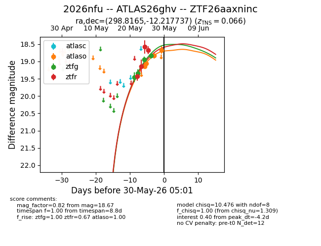
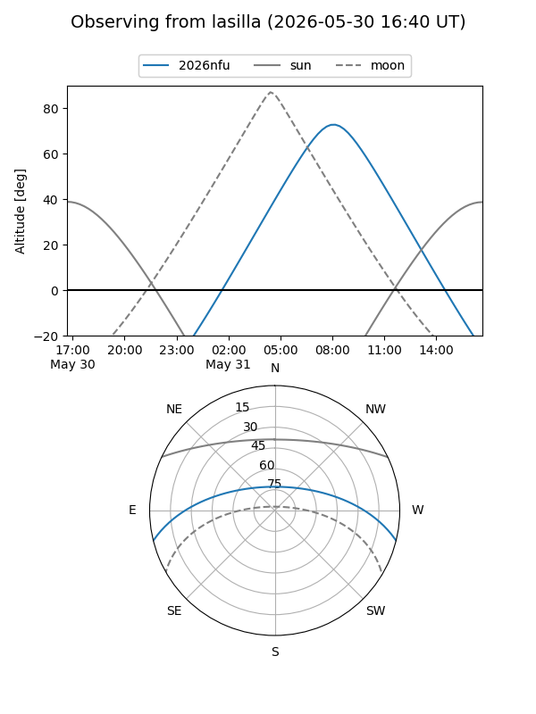
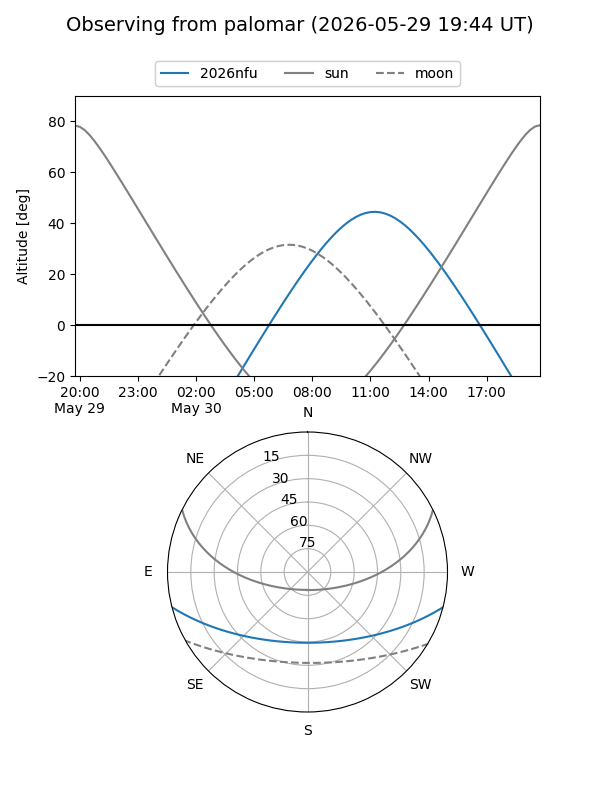
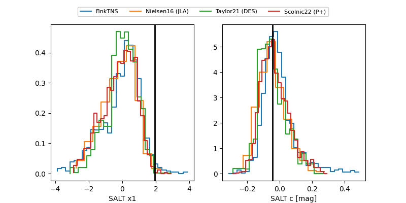

2026nfu
Target 2026nfu at 2026-05-30 05:02
Aliases and brokers:
lsst-FINK: link
lsst-Lasair: link
lsst-ALeRCE: link
ztf-FINK: link
ztf-Lasair: link
ztf-ALeRCE: link
TNS: link
YSE: link
alt names
ZTF26aaxninc (ztf,fink_ztf)
2026nfu (tns,yse)
ATLAS26ghv (atlas)
Coordinates:
equatorial (ra, dec) = 298.8165,-12.21774
equatorial (HMS+DMS) = 19:55:15.97,-12:13:03.85
galactic (l, b) = (28.9248,-19.61083)
Flags:
confirmed ia: True
TNS confirmed: SN Ia
TNS redshift: 0.066
Photometry:
last atlaso=18.67, ztfg=18.83, ztfr=18.68
4 atlaso, 4 ztfg, 4 ztfr detections
Lightcurve

Visibility


Additional plots
